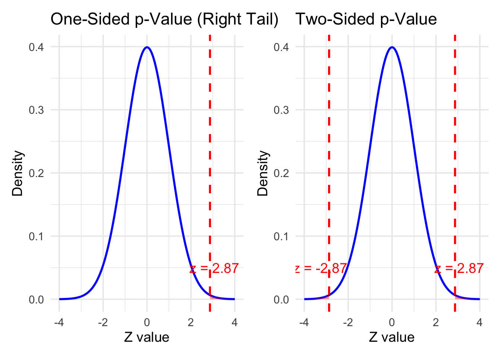

n <- 500 # sample size is large enough
x <- 340
phat <- x/n
sigma <- sqrt((1-phat)*phat)
alpha <- 0.05
loBound <- phat - qnorm(1-alpha/2)*sigma/sqrt(n)
loBound[1] 0.6391123upBound <- phat + qnorm(1-alpha/2)*sigma/sqrt(n)
upBound[1] 0.7208877Know how to use R to construct a confidence interval(CI) on Proportion and Difference of Two Proportions
Identify the appropriate inference method to answer questions about one proportion and two proportions.
Interpret the test statistic and p-value and make a conclusion about the proportion(s) based on a p-value.
Know how to use prop.test.
A point estimator of the proportion \(p\) in a binomial experiment is given by the statistic \(\hat{p} =x/n,\) where \(x\) represents the number of successes in \(n\) trials. If the unknown proportion \(p\) is not expected to be too close to 0 or 1, we can establish a confidence interval for p by considering the sampling distribution of \(\hat{p}.\) The sample proportion \(\hat{p} = x/n\) is the sample mean of these \(n\) values. Hence , by the Central Limit Theorem, for \(n\) is sufficiently large, \(\hat{P}\) is approximately normally distributed with mean \(\mu_{\hat{P}} = p\) and variance \(\sigma^2_{\hat{p}} = \frac{p(1-p)}{n}.\) Therefore \[ Z = \frac{\hat{p}-p}{\sqrt{p(1-p)/n}} \sim \mathcal{N}(0,1)\] where \(z_{\alpha/2}\) is the \(z\)-value leaving an area of \(\alpha/2\) to the right.
Note: If we don’t have the exact \(p\), we will use \(\hat{p}\) to approximate \(p\) under the radical sign.
If \(\hat{p}\) is proportion of successes in a random sample of size \(n,\) an approximate \(100(1 -\alpha)\%\) confidence interval, for the binomial parameter \(p\) is given by \[ \hat{p} - z_{\alpha/2}\sqrt{\frac{\hat{p}(1-\hat{p})}{n}} < p < \hat{p} + z_{\alpha/2}\sqrt{\frac{\hat{p}(1-\hat{p})}{n}},\] where \(z_{\alpha/2}\) is the \(z\)-value leaving an area of \(\alpha/2\) to the right.
Example 1 In a random sample of \(n = 500\) families owning television sets in the city of Hamilton, Canada, it is found that \(x = 340\) subscribe to HBO. Find a 95% confidence interval for the actual proportion of families with television sets in this city that subscribe to HBO.
[1] 0.6391123[1] 0.7208877Similarly, we can obtain a confidence interval on \(p_1-p_2\).
In a random sample of \(n=500\) families owning television sets in the city of Hamilton, Canada, it is found that \(x=340\) subscribe to HBO. The 95% confidence interval is \((0.637, 0.720)\) and can be interpreted as follows:
The researchers are 95% confident that the proportion of _____ with HBO subscriptions is between 0.637 and 0.720.
Answer: C. A confidence interval estimates a population proportion, not the proportion in the sample. The population of interest is all families owning television sets in the city of Hamilton.
If \(\hat{p}_1- \hat{p}_2\) are the proportions of successes in random samples of size \(n_1\) and \(n_2\), respectively, \(\hat{q}_1 = 1-\hat{p}_1\), and \(\hat{q}_2 = 1-\hat{p}_2\), an approximate \(100(1 -\alpha)\%\) confidence interval for the difference of two binomial parameters, \(p_1-p_2\), is given by \[ (\hat{p}_1-\hat{p}_2) - z_{\alpha/2}\sqrt{\frac{\hat{p}_1\hat{q}_1}{n_1} + \frac{\hat{p}_2\hat{q}_2}{n_2}} < p_1-p_2 < (\hat{p}_1-\hat{p}_2) + z_{\alpha/2}\sqrt{\frac{\hat{p}_1\hat{q}_1}{n_1} + \frac{\hat{p}_2\hat{q}_2}{n_2}} ,\] where \(z_{\alpha/2}\) is the \(z\)-value leaving an area of \(\alpha/2\) to the right.
Example 2 A certain change in a process for manufacturing component parts is being considered. Samples are taken under both the existing and the new process so as to determine if the new process results in an improvement. If 75 of 1500 items from the existing process are found to be defective and 80 of 2000 items from the new process are found to be defective, find a 90% confidence interval for the true difference in the proportion of defectives between the existing and the new process.
[1] -0.001731239[1] 0.02173124Question: Why don’t we need to think about the variance known or unknown for estimation on proportions?
Answer: We can use \(\hat{p}\) to estimate the variance.
A university wants to compare pass rates between two teaching methods.
Method A: 145 out of 160 students passed
Method B: 138 out of 170 students passed
Please construct a 95% CI on the difference between the pass rates.
Revisit Example 1.In a random sample of \(n=500\) families owning television sets in the city of Hamilton, Canada, it is found that \(x=340\) subscribe to HBO.
Suppose we make the conjecture, the proportion of families with television sets in this city that subscribe to HBO is 0.7.
Parameter:
The population parameter of interest is the proportion, \(p\), of families with television sets in Hamilton, Canada that subscribe to HBO Hypotheses:
\[\begin{align*} H_0: p & = 0.7, \\ H_1: p & \ne 0.7. \end{align*}\]
Observed data:
In a random sample of \(n=500\) families owning television sets in the city of Hamilton, Canada, it is found that \(x=340\) subscribe to HBO. The observed sample proportion is \(\hat{p} = 340/500 \approx 0.68\).
Test statistic
A standardized test statistic is typically used. Assuming \(n = 500\) is large enough to apply the Central Limit Theorem, the sampling distribution of \(\hat{p}\) will be approximately normal. That is
\(\hat{p} \sim \mathcal{N}(0.68, 0.7\times(1-0.7)/500) = \mathcal{N}(0.68, 0.02049^2)\)
\[ z = \frac{\hat{p}-\mu}{\sigma_{\hat{p}}} = \frac{0.68-0.7}{0.02049} \approx -0.9759\]
p-value
\(\mathcal{N}(0,1)\) distribution is used to find the p-value, or probability, of obtaining the observed statistic, \(z \approx -0.9759\) , or one more extreme in the direction of the alternative hypothesis.
In R, we can use prop.test to do the 1- or 2-sample proportion test
1-sample proportions test with continuity correction
data: 340 out of 500, null probability 0.7
X-squared = 0.85952, df = 1, p-value = 0.3539
alternative hypothesis: true p is not equal to 0.7
95 percent confidence interval:
0.6368473 0.7203411
sample estimates:
p
0.68 We can find p-value is much larger than \(\alpha = 0.05\), we fail to reject \(H_0\).
Note: prop.test in R is different from z-score. But we get same result.
What about \[\begin{align*} H_0: p & = 0.7, \\ H_1: p & > 0.7. \end{align*}\]
This is one-sided test. We should calculate the p-value with one side.
Here p-value is much larger than two-sided case.
We can also use prop.test with `alternative =“greater”.
1-sample proportions test with continuity correction
data: 340 out of 500, null probability 0.7
X-squared = 0.85952, df = 1, p-value = 0.8231
alternative hypothesis: true p is greater than 0.7
95 percent confidence interval:
0.6437733 1.0000000
sample estimates:
p
0.68 We also can find p-value is much larger than \(\alpha = 0.05\), we fail to reject \(H_0\).
A hypothesis test is also useful for comparing the parameters of two independent populations.
Example 3. A vote is to be taken among the residents of a town and the surrounding county to determine whether a proposed chemical plant should be constructed. The construction site is within the town limits, and for this reason many voters in the county believe that the proposal will pass because of the large proportion of town voters who favor the construction. To determine if there is a significant difference in the proportions of town voters and county voters favoring the proposal, a poll is taken. If 120 of 200 town voters favor the proposal and 240 of 500 county residents favor it, would you agree that the proportion of town voters favoring the proposal is higher than the proportion of county voters? Use an \(\alpha = 0.05\) level of significance.
Parameter:
\(p_T =\) proportion of town voters favor the proposal
\(p_C =\) proportion of county voters favor the proposal
A hypothesis test can be used to determine the proportion of town voters favoring the proposal is higher than the proportion of county voters.
Hypotheses:
The null hypothesis can be stated as either the two proportions are equal, or the difference between the two proportions is 0. The alternative hypothesis is greater.
\[\begin{align*} H_0: p_T & = p_C \text{ or } p_T -p_C =0, \\ H_1: p_T & > p_C. \end{align*}\]
Note: Theory-based inference methods for two population proportions require a large enough random sample from each population for the Central Limit Theorem to apply and the test statistic to be normally distributed.
Test statistics:
Under the null hypothesis \(H_0:p_1=p_2\), the expected difference between the two sample proportions is 0. For large samples, the difference in sample proportions is approximately normally distributed. Therefore, we standardize the observed difference to obtain a \(z\)-test statistic.
\[z = \frac{\hat{p_T}-\hat{p_C} -0}{\sqrt{\frac{\hat{p}_T(1-\hat{p}_T)}{n_T} + \frac{\hat{p}_C(1-\hat{p}_C)}{n_C}}} \sim \mathcal{N}(0,1).\]
Based on the example, we have \[\hat{p}_T = \frac{120}{200} \approx 0.6, \qquad \hat{p}_C = \frac{240}{500} \approx 0.48, \qquad n_T = 200 \qquad n_C = 500.\]
Thus, \(z \approx 2.86972.\)
p-value:
\(\mathcal{N}(0,1)\) distribution is used to find the p-value, or probability, of obtaining the observed statistic, \(z \approx 2.86972\) , or one more extreme in the direction of the alternative hypothesis.
Therefore, we reject \(H_0\) and agree that the proportion of town voters favoring the proposal is higher than the proportion of county voters.
Can we use prop.test? Yes
2-sample test for equality of proportions with continuity correction
data: c(120, 240) out of c(200, 500)
X-squared = 7.7619, df = 1, p-value = 0.002668
alternative hypothesis: greater
95 percent confidence interval:
0.04869691 1.00000000
sample estimates:
prop 1 prop 2
0.60 0.48 We also can find p-value is much smaller than \(\alpha = 0.05\), we reject \(H_0\).
1) The value of the test statistic for the two-sided hypothesis test is _____ 2.86972, the value of the test statistic for the one-sided hypothesis test.
Answer: b) equal to. Because the test statistic calculation does not depend on the alternative hypothesis, the one-sided and two-sided hypothesis tests have the same \(z\) test statistic.
2) The p-value for the two-sided hypothesis test is _____ 0.0021, the p-value of the one-sided hypothesis test.
Answer: c) greater than. The two-sided hypothesis test p-value is the area under the \(\mathcal{N}(0,1)\) distribution curve for values greater than or equal to \(z=2.86972\) and less than or equal to \(z=-2.86972\). The two-sided p-value includes both tails and is twice the one-sided p-value. Therefore, the two-sided p-value is greater than the one-sided p-value.

A university wants to compare two teaching methods.
Method A: 145 out of 160 students passed
Method B: 138 out of 170 students passed
The university claimed that Method A is better than Method B. Given the level of significance \(\alpha = 0.05\), can you conduct a hypothesis test to verify the claim? What if \(\alpha =0.01\)?
When a hypothesis test results in a small p-value and the null hypothesis is rejected, the data provide statistical evidence of the parameter(s) being different from the null hypothesis claim. However, a statistical difference does not imply a practical difference. Whether or not the difference is enough to be meaningful in real life should also be considered.